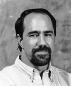

|
 |
ACM Fellow Profile
egb@rational.com |
 |
Your earlier work on object-oriented analysis and design and on
OO methodology led up to your being honored as an ACM Fellow.
That work culminated in the Unified Modeling Language (UML).
What's happening with UML now?
When you look at UML it's really an amazing accomplishment,
bringing together three different methodologists (Ivar Jacobson,
Jim Rumbaugh, and myself), along with companies as diverse as
Microsoft, Oracle, Hewlett-Packard, Texas Instruments, MCI
Systemshouse, IBM, and many others. UML transcends the ongoing
language wars and the operating system wars.
The nice news is that I'm out of a job with regard to the development of UML. It's now under the control of the Object Management Group's Revision Task Force. Their mission is twofold. First, to resist change and bring stability to the language, and second, to fix the things that are obviously broken, such as index numbering and some semantic errors.
UML is entering widespread use. Microsoft is using UML in their Repository and in Visual Studio, IBM has used it for their San Francisco project, and Oracle is using it as a language for data modeling in Oracle 8; it's even being used as a hardware modeling language. UML is morally neutral with respect to languages, so it's quite possible to model with UML and develop in Cobol or C as well as in Java and C++. In fact, most large, distributed, concurrent applications span multiple languages such as these. And aspects of these contemporary applications, such as distribution, concurrency, and quality of service, have direct representations in UML.
What's the best reference to your work?
Probably two books that are not yet published! The UML User's
Guide will be in print shortly, and I'm working on a book on
architectural patterns. There are two currently published ones:
Object-Oriented Analysis and Design with Applications. Grady Booch, Addison-Wesley, 1994, ISBN 0-805-35340-2. (I'm working on the third edition, which is due out later this year.)The other is:
Object Solutions: Managing the Object-Oriented Project. Grady Booch, Addison-Wesley, 1995, ISBN 0-805-30594-7.
What are your current research interests?
The first is study into architectural patterns. I spend about 30
percent of my time working as an architectural mentor, involved
in a variety of domains. It's painfully clear that within
certain classes of applications there are canonical architectures
that just work. So how does one represent architectures? There
are many existing languages for this, but they're textual. UML
can represent architectures graphically. I'm currently involved
in "harvesting" architectural patterns with large companies and
big projects, working with them to find patterns that they
haven't recognized or haven't been able to articulate.
My second research interest is in gaining a more rigorous understanding of the process of software development. Rational has a process group that focuses on this using an iterative, incremental development technique.
What are your current outside interests?
Believe it or not, I do have a life beyond software. My wife and
I love to travel. We took a six-week trip around the world last
year. We're also passionate readers: we recently added it up,
and together we read about 400 books a year. I have a 22-foot
bookcase just for my professional books and it's not big enough -
we'll have to move to a new house to fit all of our books. My
other outside interest is in music. Four years ago, after many
years of playing guitar and electronic keyboard, I took up the
Celtic harp, and more recently, the hammered dulcimer, playing
medieval material. I also sing, primarily contemporary Christian
music.
What was the greatest influence on you?
One of my instructors at the Air Force Academy, George Walther.
Although it wasn't called that at the time, he had an
understanding of object-oriented techniques. I remember that he
graded one of my projects, and he brought it to me and said, "You
did this correctly, but now let me show you how to do it
elegantly." That was an enlightening moment, where I realized
the potential for elegance and beauty in software.
What has been your greatest influence?
In trying to do what George did for me: bringing more science to
the art of architecting software systems. It's humbling,
amazing, and even frightening at times to be exposed to systems
that were developed by people who've read my books and used my
methodologies: I hope they read the right chapters!
Who do you think has made the greatest impact on software engineering?
That's a tough one. There are so many. Of the classic computer
scientists, Edsger Dijkstra, Tony Hoare and David Parnas led the
way. In contemporary times, Bjarne and James Gosling and other
colleagues have brought languages to the table that have had a
lasting impact. That Java even saw the light of day is an
amazing accomplishment.
What's your favorite story about software engineering or development?
There are so many from which to chose. As for contemporary
projects, I've collected a number of such war stories in my book
"Object Solutions." As for a story that's touched me the most,
well, the late Grace Hopper had far better tales that I could
ever tell. In fact, I still have the nanosecond she gave me when
she lectured at the Academy.
Which computer-related areas are most in need of investment by government,
business or education?
In education, computers have certainly entered the classrooms,
but one rarely sees them introduced for learning the concepts of
computer science. Kids often leave high school saying they know
how to use computers, but have never written a line of code.
Investment in teaching these foundations will be crucial to the
next generation of developers. We have to realize how important
computer science is to maintaining the pace of national and
global innovation.
As far as government is concerned, in the short term, the best thing it can do is stay out of the way, anti-trust issues notwithstanding. The movements in the legal community toward restraints, combined with patent activity, are frightening when you consider the ill-informed decisions being made. Janet Reno has admitted she really doesn't use computers.
As far as business is concerned, there's tremendous technology churn that is eating up scarce resources. The language and operating system wars make it a crapshoot for many companies: they have to place their bets on some combination of technologies and hope the market doesn't shift out from under them. The Year 2000 problem and the currency conversion to the Euro are consuming a lot of dollars that are then not available to spend on innovation. But natural forces tend to lead business to make the right investments without outside prodding.
The best businesses are those that see software as a strategic weapon, if you will. Take Kodak: it's a company that must change from atoms to bits. Its future depends on its ability to use software to make that change. That's a fundamental business shift: software can make or break a company. Businesses that don't understand that will fall behind. Software is a technology that knows no political bounds.
What advice do you have for computer science/software engineering students?
Gain broad experience and seek an understanding of systems issues
and of teams. There are two specific areas one should focus on.
First, there's a need for continued growth in the levels of
abstraction, from languages to tools to methodologies. Witness
component-based software today. The second area is in the
importance of the individual to the team. Don't just hone your
individual skills; gain the skills to work with others.
My other advice is, have a life! Software development can be a great career, but the people I admire most are the ones who are whole people.
What is the most often-overlooked risk in software engineering?
It has nothing to do with technology. The fundamental risks are
political as well as sociological. It's also ignorance of how
teams function. Don't believe that you can simply take a set of
smart men and women, put them in a room and have great software
come out. There may be occasional exceptions but not for the
long term, not in a sustainable way. Tom DeMarco's work on
Peopleware is so important in this regard. It should be read by
everyone in the field.
What is the most-repeated mistake in software engineering?
This overlaps a lot with the previous point. The mistake is in
viewing everything simply as a matter of programming. Many
people believe they can program themselves out of a hole, but
they generally end up digging themselves in deeper.
What are the most exciting/promising software engineering ideas or techniques on the horizon?
The whole patterns movement is what really jazzes me. Gamma and
his colleagues, Cunningham, Coplien, Beck, Shaw, Buschmann,
Anderson and other folks are codifying different aspects of
patterns. The work I'm doing on architectural patterns is just
one part of this much larger body of work that's going on around
the world.
Historically in corporations, much of this type of knowledge has been passed on informally as a kind of folklore. UML offers a way to formalize it through visualization, specification, construction and documentation. It's perhaps the first modeling language that's reified the idea of patterns.
What are your plans for the future or the next five years?
I have more things I'd like to do, personally and professionally,
that I can possibly fit in a lifetime. Anyway, because our field
is so dynamic, it's hard to predict what five years out will look
like, but three things I do know: software will continue to grow
in its importance to world economies, software will become more
complex, and building complex software systems will continue to
be a wicked problem. For the forseable future, I'll focus my
professional energies on helping to push the science and art of
software development so that it is less of a wicked problem.
Thank you!
Profiled by Greg Cooper